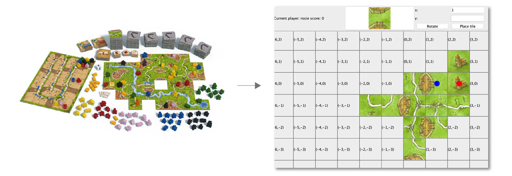
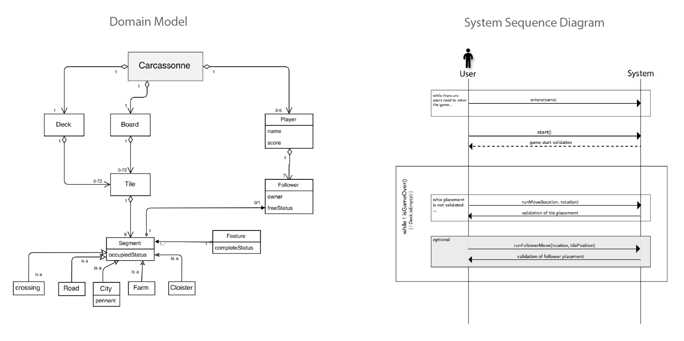

Skills: Software Design, Object-oriented Analysis, Core and GUI implementation, Unit testing
Time: March 2018
Overview
Carcassonne is a popular tile-based board game. In this project, I designed and implemented a medium-sized program of Carcassonne game using Java. I was able to go through the entire process of object-oriented design, evaluation, and implementation. I also learned about UML class diagrams and interaction diagrams, which are valuable tools for communication in software development.
Process
I started my design process by defining the problem domain and conceptualizing the real-world objects. Then I proceeded to identify key actions involved when the user interacts with the system. Finally, I moved on to making the system interaction diagrams and the object model that detail the software-level interactions.
I implemented the core features of the Carcassonne game. I also completed a test suite with JUnit to test the core implementation that achieves about 95% line coverage. At the last step I included a graphical user interface (GUI) that allow multiple players to be registered to play the game. I used the JavaSwing framework for graphical visualization.
Goals
I incorporated multiple design patterns to achieve the goals of low-coupling, low representational gap, high cohesion, and information hiding:
- Decorator pattern is applied to constructing objects that share some invariant parts of the algorithm. This enables code reuse and avoids code duplication. At the same time, decorator pattern allows fuctionalities to be dynamically added to objects.
- Strategy pattern is used to for scoring strategies in the game. Due to the complexity of the game, we need various scroing rules to be applied to different features. This design pattern makes new algorithm to be easily extendable, and separates algorithm between different components in the game.
- Observer pattern is used between GUI and the core implementation to communicate information from the core(Model) to the GUI (View). I defined a small interface of how observers would receive notifications from the model (GameChangeListener). This reduces the coupling between GUI and the core implementation of the game.